Joinery
CAP Menuisier fabricant. Sixteen English words of the trade: tools, objects and everyday gestures. Open to everyone.
Four steps: from French to English, listen and choose, match, and complete a sentence at work. The Listen button reads the word in British English.
Word list
| Image | Français | English | Audio |
|---|---|---|---|
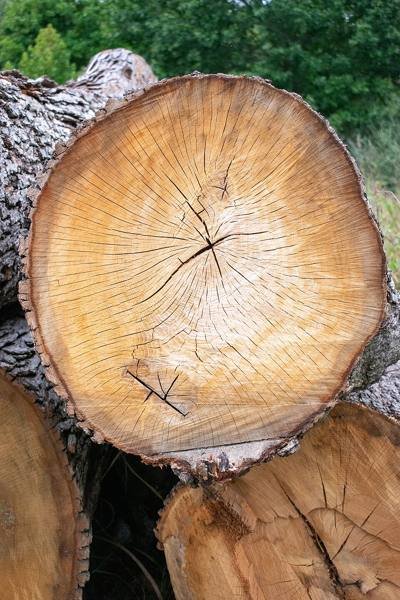 | le bois | wood | |
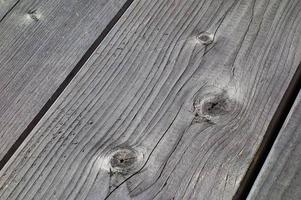 | la planche | plank | |
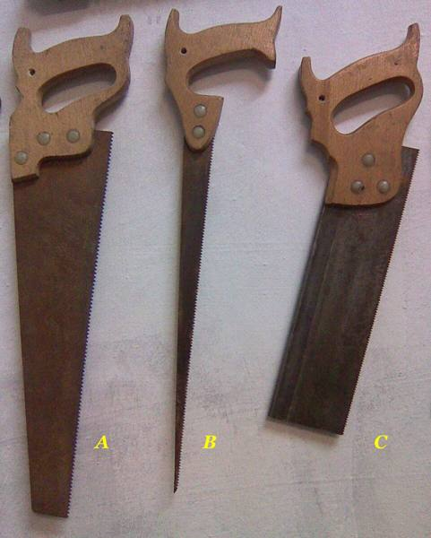 | la scie | saw | |
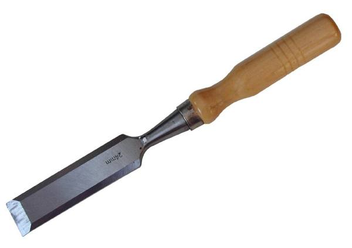 | le ciseau à bois | chisel | |
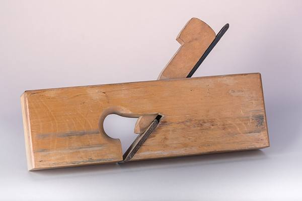 | le rabot | plane | |
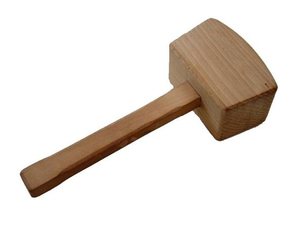 | le maillet | mallet | |
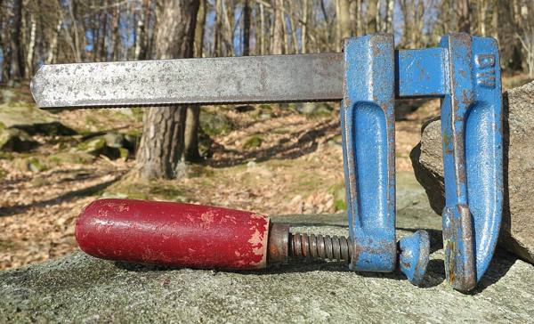 | le serre-joint | clamp | |
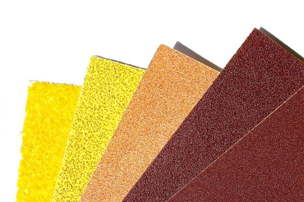 | le papier de verre | sandpaper | |
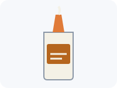 | la colle à bois | wood glue | |
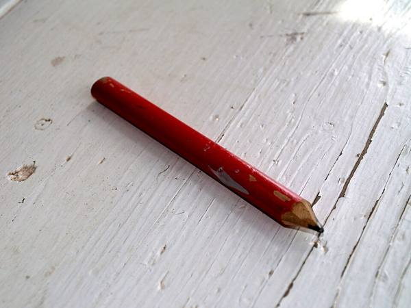 | le crayon de menuisier | carpenter's pencil | |
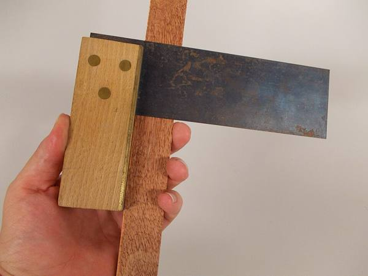 | l'équerre | try square | |
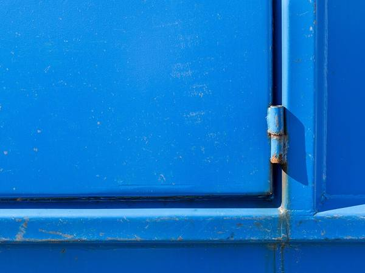 | la charnière | hinge | |
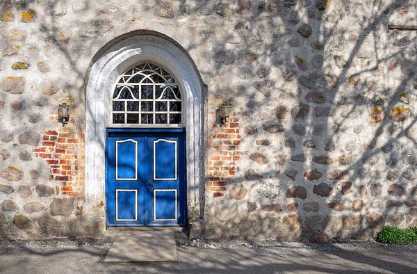 | la porte | door | |
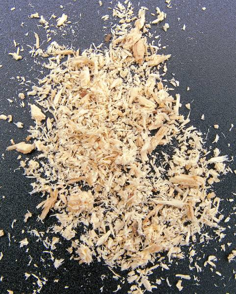 | la sciure | sawdust | |
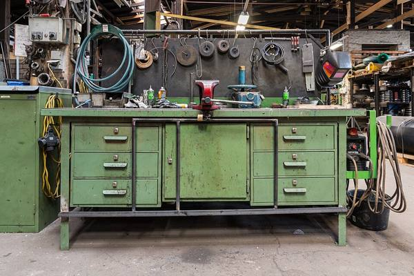 | l'établi | workbench | |
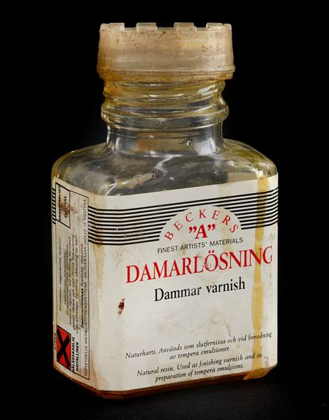 | le vernis | varnish |
Teacher key: sentences at work
- Cut the plank with the ________. (saw)
- Hold the two pieces together with a ________. (clamp)
- Hit the chisel with the ________. (mallet)
- Make the wood smooth with the ________. (plane)
- Fix the door with a ________. (hinge)
- Sweep up the ________ at the end of the day. (sawdust)
In steps 1, 2 and 3, the right answer is the line in the word list.
Image credits
Photos under an open licence, from Wikimedia Commons, resized for the phone. Original drawings for gestures and ideas.
- le bois (wood) : photo by Kelsey Todd, licence CC BY-SA 4.0, file page on Wikimedia Commons.
- la planche (plank) : photo by W.carter, licence CC0, file page on Wikimedia Commons.
- la scie (saw) : photo by Mnemosine, licence Public domain, file page on Wikimedia Commons.
- le ciseau à bois (chisel) : photo by Za, licence CC BY-SA 3.0, file page on Wikimedia Commons.
- le rabot (plane) : photo by CEphoto, Uwe Aranas, licence CC BY-SA 3.0, file page on Wikimedia Commons.
- le maillet (mallet) : photo by Za, licence CC BY-SA 3.0, file page on Wikimedia Commons.
- le serre-joint (clamp) : photo by R. Henrik Nilsson, licence CC BY 4.0, file page on Wikimedia Commons.
- le papier de verre (sandpaper) : photo by Simon Eugster, licence CC BY-SA 3.0, file page on Wikimedia Commons.
- la colle à bois (wood glue) : original drawing, Grand Tour, CC BY-NC-SA 4.0.
- le crayon de menuisier (carpenter's pencil) : photo by Santeri Viinamäki, licence CC BY-SA 4.0, file page on Wikimedia Commons.
- l'équerre (try square) : photo by Luke Milburn, licence CC BY 2.0, file page on Wikimedia Commons.
- la charnière (hinge) : photo by W.carter, licence CC0, file page on Wikimedia Commons.
- la porte (door) : photo by Radomianin, licence CC BY-SA 4.0, file page on Wikimedia Commons.
- la sciure (sawdust) : photo by Rasbak, licence CC BY-SA 3.0, file page on Wikimedia Commons.
- l'établi (workbench) : photo by Dietmar Rabich, licence CC BY-SA 4.0, file page on Wikimedia Commons.
- le vernis (varnish) : photo by Hansa Andersson Dalarnas museum, licence CC BY 4.0, file page on Wikimedia Commons.
Vocabulary sheet to print
Large type (16 point minimum), in three formats: